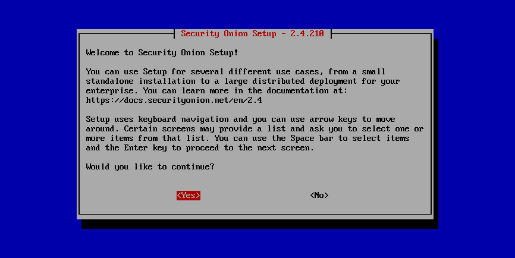

Configuration
Now that you’ve installed Security Onion, it’s time to configure it!
{kind=link}

Security Onion is designed for many different use cases. Here are just a few examples!
Tip
If this is your first time using Security Onion and you just want to try it out, we recommend the Import option as it’s the quickest and easiest way to get started.
Warning
If the network configuration portion displays a message like The IP being routed by Linux is not the IP address assigned to the management interface, then you have multiple network interfaces with IP addresses. In most cases, sniffing interfaces should not have IP addresses and there should only be an IP address on the management interface itself. Sometimes this is caused by a sniffing interface connected to a normal switch port (not a TAP/SPAN port) and acquiring an IP address via DHCP. Double-check your network interfaces, wiring, and configuration.
Import
One of the easiest ways to get started with Security Onion is using it to forensically analyze pcap and log files. Simply select the IMPORT option, follow the prompts, and then import pcap files or Windows event logs in EVTX format using the Grid page.
Evaluation
Evaluation mode is ideal for classroom or small lab environments. Evaluation is not designed for production usage. Choose the EVAL option, follow the prompts, and then proceed to the After Installation section.
Production Server - Standalone
Standalone is similar to Evaluation in that it only requires a single box, but Standalone is more ready for production usage. Choose STANDALONE, follow the prompts, and then proceed to the After Installation section.
Production Server - Distributed Deployment
If deploying a distributed environment, install and configure the manager node first and then join the other nodes to it. For best performance, the manager node should be dedicated to just being a manager for the other nodes (the manager node should not do any network sniffing, that should be handled by dedicated sensor nodes).
Build the manager by running Setup, selecting the DISTRIBUTED deployment option, and choosing the New Deployment option. You can choose either MANAGER or MANAGERSEARCH. If you choose MANAGER, then you must join one or more search nodes (this is optional if you choose MANAGERSEARCH) and you will want to do this before you start joining other node types.
Build nodes by running Setup, selecting the DISTRIBUTED deployment option, choosing Existing Deployment, and selecting the appropriate option. Please note that all nodes will need to be able to connect to the manager node on several ports and the manager will need to connect to search nodes and heavy nodes. You’ll need to make sure that any network firewalls have firewall rules to allow this traffic as defined in the Firewall section. In addition to network firewalls, you’ll need to make sure the manager’s host-based firewall allows the connections. You can do this in two ways. The first option is going to Administration –> Configuration –> firewall –> hostgroups, selecting the appropriate node type, and adding the IP address. The second option is to wait until the node tries to join and it will prompt you to run a specific command on the manager. Regardless of which of the two options you choose, it will eventually prompt you to go to Administration –> Grid Members, find the node in the Pending Members list, click the Review button, and then click the Accept button.
Proceed to the After Installation section.